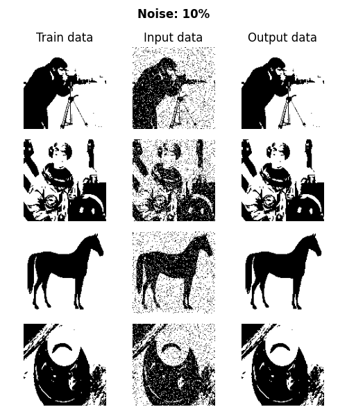
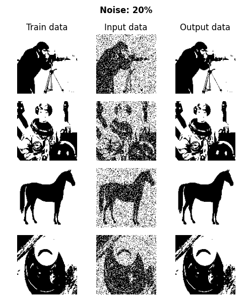
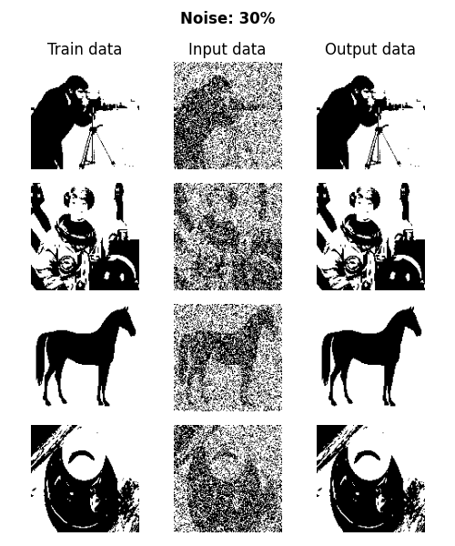
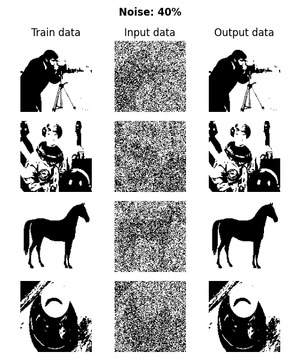
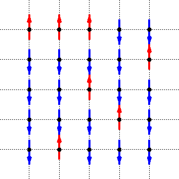

Hopfield Networks
Jan 19, 2025
A quick implementation of a Hopfield network in Python
Introduction
Hopfield networks are a type of recurrent neural network that can store and recall patterns. They are based on the idea of associative memory, where a network can "remember" a pattern and recall it when given a similar input.
Theory
Energy Function
The Hopfield network has an energy function given by:
where is the weight between neurons and , and is the state of neuron .
Dynamics
The network is updated either synchronously or asynchronously (each node one at a time or all nodes at once, respectively). Each neuron's state is computed as a function of the weighted sum of the other neurons:
Computing Weights
For a given pattern, the weights are computed according to a Hebbian Learning rule. The goal is to strengthen the connection (increase the weight) of nodes that are active at the same time (which is why we use ). For a Hopfield network with nodes and a pattern , weights are computed as
If and are in the same state, their product is positive and the weight is bigger. Intuitively, this translates to each node having a larger impact on the state of the other.
To memorize multiple patterns , each weight is the sum of the weights for each pattern:
Implementation
Matrix-Vector Notation
If we encode the state of the network as an -dimensional vector, a synchronous update rule is given by multiplying by a -dimensional weight matrix. This weight matrix is given by the sum of the outer product of each pattern with itself:
To understand why this has each memorized vector as the stable point of the network dynamics, consider a transition:
since is a scalar. Then, we simply superimpose the contributions of each memorized vector .
Python Implementation
class HopfieldNetwork:
def __init__(self, patterns):
self.patterns = patterns
self.num_neurons = patterns.shape[1]
self.weights = self.create_weights(patterns)
def create_weights(self, patterns):
weights = np.zeros((self.num_neurons, self.num_neurons))
for pattern in patterns:
pattern = pattern.reshape(-1, 1)
weights += np.outer(pattern, pattern)
np.fill_diagonal(weights, 0) # no self-connections
return weights / patterns.shape[0]
def update_state(self, state):
net_inputs = self.weights @ state
state = np.sign(net_inputs)
return state
def energy(self, state):
return -0.5 * state @ (self.weights @ state)
def recall(self, initial_state, max_iterations=10):
state = initial_state.copy()
energy = self.energy(state)
for _ in range(max_iterations):
updated_state = self.update_state(state)
new_energy = self.energy(updated_state)
if new_energy == energy:
break
state = updated_state
energy = new_energy
return stateToy Problem
As an example, consider a Hopfield network meant to store 128 x 128 px images. Using the above implementation to learn 4 patterns, the network is able to accurately recall the patterns with up to 40% of the pixels flipped. The specific code used is available for download here.




Note: This display style and the specific patterns were adapted from takyamamoto/Hopfield-Network.
Statistical Mechanics and Deep Learning
Hopfield networks have a wide variety of applications in statistical physics and deep learning theory.
Ising Model
The Hopfield network is closely tied to the Ising model in statistical mechanics. In physics, the Ising model is a lattice structure used to describe ferromagnetic materials. In the Hopfield network, the neurons are analogous to spins at each lattice point, the weights represent the coupling strength between spins, and the energy function describes the total energy of the system.

Temperature and Simulated Annealing
We can also introduce a temperature into the Hopfield network, which allows it to explore many more states and escape local minima. As the temperature decreases, the model settles into a single minima. Simulated annealing is a process by which the model starts at high temperature and "cools down" over time. This prevents the model from getting stuck in local minima early on and increasing its chances of settling into a global minima (one of the memorized patterns).
Memory and Attention Mechanisms
Ramsauer et al. (2020) showed that attention mechanisms in transformers can be viewed as a continuous generalization of Hopfield Networks, implying that Transformers use something similar to associative memory. The same way that tokens attend to each other in transformers, patterns "attend" to each other in Hopfield networks, predicting which pattern to converge to, or which token to predict.